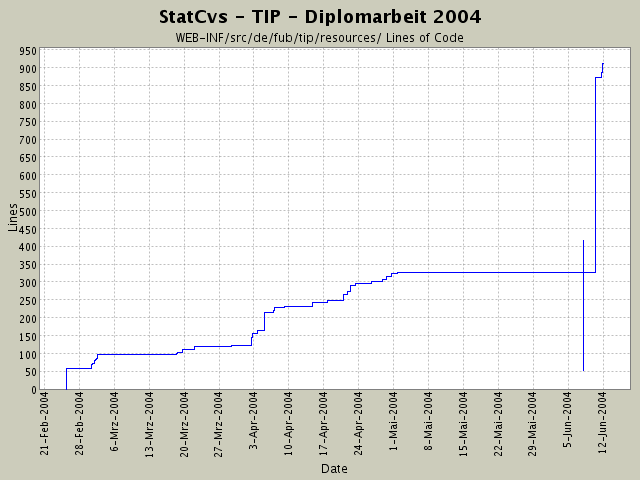

Summary Period: 2004-02-25 to 2004-06-12
[root]/WEB-INF/src/de/fub/tip/resources

Total Lines Of Code:
912 (2004-06-13 13:05)
| Author | Changes | Lines of Code | Lines per Change |
|---|---|---|---|
| hirsch | 81 (100.0%) | 1592 (100.0%) | 19.6 |
Kosmetika an der Ansicht -
leerzeilen,
Tabelle statt nur hintereinander schreiben (information.jsp);
Tippfehler in RessourceBundle beseitigt
6 lines of code changed in:
Anpassung der RessourceBundles an neue Seiten
- data/anzeige/sight/information.jsp und eventarea.jsp
33 lines of code changed in:
Anpassen des Verweises - vll. wird die NullPointerException auch
durch Verweis ausgelöst ... hoffentlich wird inspectvariables.jsp ausgeführt
3 lines of code changed in:
Anpassungen - t.name wird nicht ausgelesen
3 lines of code changed in:
Anpassen der Inhalte zur Infoanzeige
3 lines of code changed in:
Anzeige der Sehenswürdigkeit verfeinert -
NullPointerException kam beim Logging ....
3 lines of code changed in:
Veränderungen an der Ansicht gemacht -
bis Eclipse abgestürzt ist / bloickiert hat.
Das macht das Arbeiten echt bescheiden!
weitere Anpassungen nötig!
12 lines of code changed in:
Informationsanzeige: Klassenrümpfe erstellt und in Config eingebunden.
EclipseProbleme (100 %CPU) bleiben wieder.
548 lines of code changed in:
wieder eine Standarddatei hinzugefügt
274 lines of code changed in:
Namensfehler -
statt appl.properties_en muss es
appl_en.properties sein!
0 lines of code changed in:
siehe letzem Kommentar!
0 lines of code changed in:
Versuch de und en als Sprachen zu etablieren.
Dazu die Standarddatei wegnehmen (ohne Länderkürzel)
0 lines of code changed in:
weitergeschrieben an den Inhalten
95 lines of code changed in:
englische Ressourcendatei hinzugefügt;
deren Inhalte müssen noch stückweise angepasst werden.
92 lines of code changed in:
Rechtschreibfehler entfernt
2 lines of code changed in:
leere Selektion wird jetzt in Action und Logik gesondert behandelt und
sollte keine NullPointerException mehr auslösen!
4 lines of code changed in:
Tippfehler bei ResourceBundle-Inhalten,
Anpassung des Seitentiels im changePropfil-Menü
3 lines of code changed in:
Inhalte angepasst
3 lines of code changed in:
Einbau der ThemenBearbeiterLogik,
kleiner Fehler in Javadoc und Kommentaren bei SightGruppenAnzeige ausgemerzt,
HTML-Seiten angepasst,
ResourceBundle-Inahlte erstellt und eingebaut.
10 lines of code changed in:
Leere Rümpfe hingeschrieben,
die ActionMessage zur Ausgabe erzeugen und
prüefen, ob die Parameter (slektierte gruppen) übergeben werden.
12 lines of code changed in:
(54 more)
Generated by StatCvs v0.2-dev